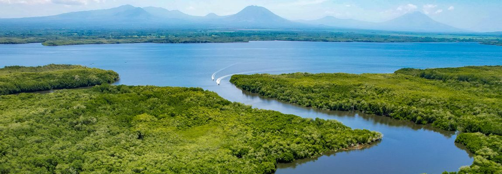
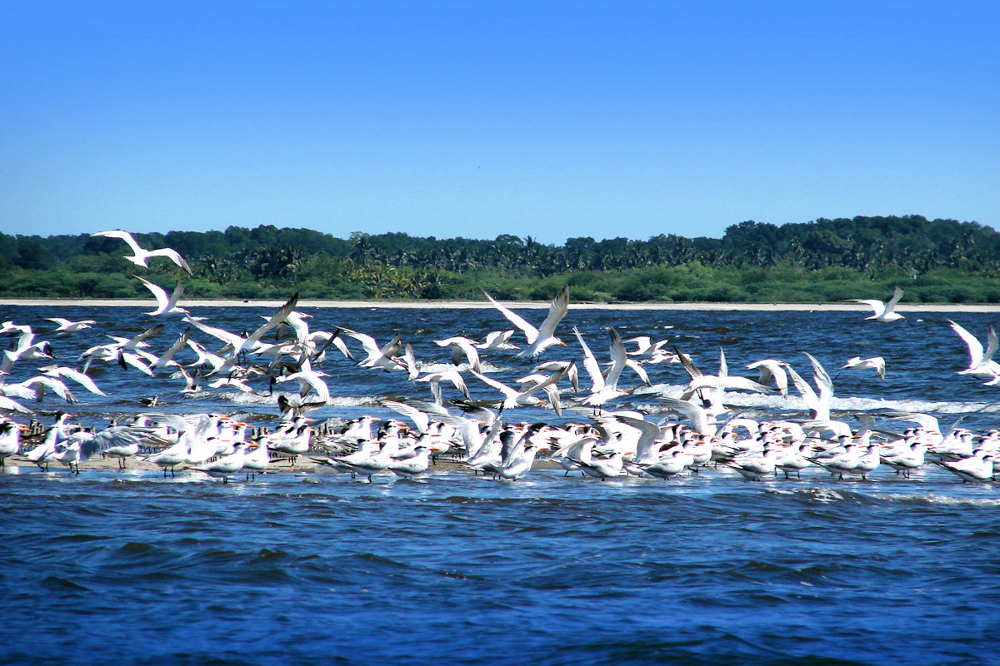
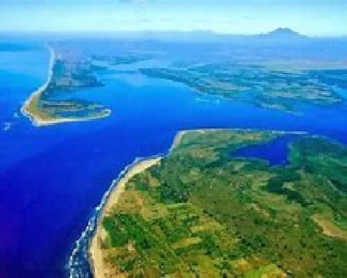

Historia
La Bahía de Jiquilisco es un extenso ecosistema de manglares, canales y playas ubicado en el oriente de El Salvador.
Reconocida por su biodiversidad y su importancia ecológica, ha sido declarada Reserva de la Biosfera por la UNESCO.
Esta zona ha sido hogar de comunidades pescadoras durante generaciones y conserva tradiciones culturales únicas.
Ubicación
Se encuentra en los departamentos de Usulután y San Miguel, a aproximadamente 150 km de San Salvador.
Es accesible por carretera y ofrece actividades de turismo ecológico y cultural, siendo un refugio natural para aves y especies marinas.
¿Por qué es famosa?
- Reserva de la Biosfera: Protege manglares, canales, playas y humedales de gran valor ecológico.
- Fauna diversa: Hogar de aves migratorias, cocodrilos, tortugas marinas y especies de agua dulce.
- Cultura local: Comunidades pesqueras que mantienen tradiciones ancestrales.
Qué hacer en Bahía de Jiquilisco
- Ecoturismo: Recorridos por manglares y canales en lancha.
- Observación de fauna: Avistamiento de aves, cocodrilos y tortugas.
- Paseos en kayak: Navegar por los canales y ríos interiores.
- Turismo cultural: Conocer la vida de las comunidades locales y su pesca tradicional.
Cómo llegar
En vehículo privado:
- Desde San Salvador, toma la Carretera Panamericana hacia Usulután y luego sigue las señales hacia Jiquilisco.
En transporte público:
- Desde San Salvador, toma un bus hacia Usulután y luego transporte local hacia la Bahía de Jiquilisco.
Galería



⬅ Volver a Lugares